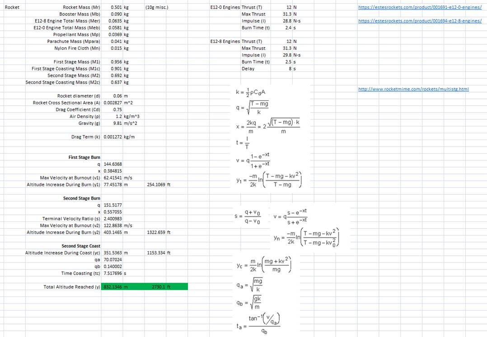

A Series of Unlikely Explanations
[May 11, 2023]
Max, Matt, Will and I have talked on and off for a while about doing a rocket project. We tossed around a lot of ideas for how complicated it should be, what sensors to include, if there should be any active controls, how many stages etc.
At New Years 2023 I bought a bunch of rocket engines for to use for a science / engineering type competition that unfortunately never happened. After News Max and I started to talk seriously about actually building a rocket. We think we'll be able to launch on one of the long weekends this summer.
We settled on a two stage rocket with three E engines per stage. For sensors we decided just to include a camera, an altimeter and IMU. We also decided on using the first stage engines to light the second stage instead of having some kind of ignition circuit. In the interest of cost / time I decided to use a raspberry pi and off the shelf parts, mostly from adafruit or sparkfun.
Here's a preliminary list of the major components:
Raspberry Pi Zero W: This will be the brains. I originally wanted to use a Zero 2 W but they appear to be pretty much out of stock worldwide. There are a couple on Amazon for $150 but that seems excessive. Instead I'll use the original version and hope it can run the camera and sensors at a reasonable sampling rate. I found a website in the UK that had them in stock for about $20
BNO085: This is the IMU. It comes on a nice little breakout board from Adafuit for $25. It seems like a fairly powerful sensor that's meant for phone or VR headsets. It has an accelerometer, gyroscope, and magnetometer all in three axes. It can report quaternions, has a step counter mode, has a "sitting on table" detector, tap-to-wake etc.
BMP388: This is the altimeter. It reports on pressure in MPa which you can then roughly convert to meters ASL. Its resolution is around +/-0.5 hPa absolute and +/-0.08 hPa relative which translates to about 10cm of relative altitude difference roughly at sea level. It also reports the temperature. It also comes on a tiny breakout board from Adafruit for $10.
PowerBoost 1000 Basic: This the power supply board. I plan on powering everything with a little lithium polymer battery so we'll need this to boost the battery voltage to 5V. I originally wanted to use the PowerBoost 1000C which has the ability to charge the battery in circuit, but unfortunately it seems to be out of stock everywhere. I'm using the 1000 Basic which doesn't have the ability to charge but comes on a small breakout board from Adafruit for $15. I'm still looking at other options for this since charging in circuit would be really nice since I'd like to solder the battery contacts onto the power supply module for shock and vibe reasons. Right now I'm still using the connector so I can easily take the battery off and put it on the charger.
Micro-Lipo Charger: I bought this little USB Li-Po charger from Adafruit ($7) to charge the batteries. I don't think it will actually be included in the flight hardware.
Battery: After some back of the envelope calculations I'm going with a 105 mAh lithium polymer battery. With all the sensors and camera running it should last roughly half an hour which should be plenty for a flight and the parachute ride down. Adafuit again for $6.
Camera Module: I've got two camera modules right now. One is a Raspi Camera Module 3 Wide Angle Lens (Adafruit $35). The other is a Zero Spy Camera - 120 Degree Focal Angle (Adafruit $15). Both cameras can record 1080p video. The Camera Module 3 sensor is 4608 x 2592 pixels, the Zero Spy has a 5 megapixel sensor, I'm not sure about the resolution though. The Spy camera is quite a bit smaller, but has a fixed cable length which might be annoying and doesn't have mounting holes like the Module 3 which is also annoying. If we use it we'll have to glue it to something or pressure fit I guess. I still need to experiment with both of these to see which one will be flying.
Switch: I'll probably want a toggle switch or something on the battery to turn everything on / off. Not sure what I'll use for this yet.
LEDs: I'll probably want to some LEDs to show that everything is working and recording etc.
Initial Integration / Testing:
I bought all the parts and started with getting the camera working.
Camera:
I'm starting with the Camera Module 3.I had to get another cable from to convert from the full size CSI interface on the camera to the mini-CSI on the Pi Zero. It worked pretty much out of the box. I did have to install the latest Raspbian, (Bullseye) to get the camera utility "libcamera" to work. All my SD cards had a previous version from when I was doing the home automation stuff. Taking pictures and video works with the basic "libcamera-still" and "libcamera-vid" commands.
I made a script that I can call on boot-up that starts taking a video and names it with the date and time:
#!/bin/bash
cd /home/pi/Camera
DATUM=$(date +"%d-%m-%Y_%H%M")
echo $DATUM
sleep 5
libcamera-vid -t 20000 -o $DATUM.h264
echo “ran camera command...”
sleep 5
ls -a
I'll leave things with the camera here for now. I still need to experiment with the other camera, and I think there are some settings that could be fine tuned like frame rate, auto-focus stuff, white balancing etc. Not sure how that stuff works yet.
Altitude Sensor:
I hooked up the BMP388 to the standard I2C 1 bus on the PI and used Adafruit's python libraries to talk to the sensor. No issues with this, works out of the box. I find that with a simple python script that reads the pressure and temperature continuously and saves them to a text file, that I'm getting around 20 readings per second which seems pretty good. I wrote a script that saves the readings to a text file (whose name includes the start time) with time stamps.
import
time
import board
import adafruit_bmp3xx
from datetime import datetime
i2c = board.I2C()
bmp = adafruit_bmp3xx.BMP3XX_I2C(i2c)
bmp.pressure_oversampling = 8
bmp.temperature_oversampling = 2
now = datetime.now()
current_time = now.strftime("%H_%M_%S_%f")
text_filename = "Alt_Data_"
+ current_time + ".txt"
print("Collecting Data...")
with open(text_filename, "w") as f:
while True:
now = datetime.now()
current_time = now.strftime("%H_%M_%S_%f")
f.write("Time: {} Pressure: {:6.4f} Temperature:
{:5.2f}".format(current_time, bmp.pressure, bmp.temperature))
f.write("\n")
I tried recording while I put the sensor on the floor and raised it above my head. It seems like I can see in the data where these changes were happening which is cool that it can pick up this small change.
I think I'll leave things here for now.
IMU:
I also connected the IMU to the standard I2C-1 interface on the PI and tried using the Adafruit's libraries to talk to it. It would sometimes work for a little while, seeming to report real values, then start throwing errors like unrecognized report or invalid report and crash. After looking online it seems like a lot of people have had I2C issues with the sensor. It seems like the sensor also supports clock stretching which the Pi doesn't like. Some people just switched over to using the UART interface but it can't report as fast as the I2C so I'd like to stick with I2C. One solution I found online was to use the Adafruit Extended Bus, which allow you to use a software based I2C (bit banged I guess?) bus using any of the GPIO pins. Here are the instructions for getting this running in case I need to do this again:
- Install the Adafruit Extended Bus:
pip3 install adafruit-extended-bus
- Add the following line to /boot/config.txt
dtoverlay=i2c-gpio,bus=3,i2c_gpio_sda=24,i2c_gpio_scl=23
- Change the header of the provided Adafruit code for the BN085 to match what is in the script below.
After hooking the IMU on GPIO 23/24 everything seems to work reliably. I created a script that creates a text file with the date and time, and writes the data from the IMU to it with timestamps. The script currently reports the accelerometer, gyro, magnetometer and quaternion data. Not sure I'll want to keep reporting all of this data on the actual flight software but I'll leave it in for now. Running the script I'm getting about 11 readings of each of the types of data per second (46 total readings per second) which seems ok. It would be nice if it were a little faster, there should be room for optimization here.
import
time
import board
import busio
from adafruit_bno08x import (
BNO_REPORT_ACCELEROMETER,
BNO_REPORT_GYROSCOPE,
BNO_REPORT_MAGNETOMETER,
BNO_REPORT_ROTATION_VECTOR,
)
from adafruit_bno08x.i2c import BNO08X_I2C
from adafruit_extended_bus import ExtendedI2C as I2C
from datetime import datetime
bno = BNO08X_I2C(I2C(3))
bno.enable_feature(BNO_REPORT_ACCELEROMETER)
bno.enable_feature(BNO_REPORT_GYROSCOPE)
bno.enable_feature(BNO_REPORT_MAGNETOMETER)
bno.enable_feature(BNO_REPORT_ROTATION_VECTOR)
now = datetime.now()
current_time = now.strftime("%H_%M_%S_%f")
text_filename = "IMU_Data_"
+ current_time + ".txt"
print("Collecting Data...")
with open(text_filename, "w") as f:
while True:
accel_x, accel_y, accel_z = bno.acceleration # pylint:disable=no-member
now = datetime.now()
current_time = now.strftime("%H_%M_%S_%f")
f.write(current_time +
" - Accleration: X: %0.6f Y: %0.6f Z: %0.6f
m/s^2" % (accel_x, accel_y,
accel_z))
f.write("\n")
gyro_x, gyro_y, gyro_z = bno.gyro # pylint:disable=no-member
now = datetime.now()
current_time = now.strftime("%H_%M_%S_%f")
f.write(current_time +
" - Gyro: X: %0.6f Y: %0.6f Z: %0.6f rads/s"
% (gyro_x, gyro_y, gyro_z))
f.write("\n")
mag_x, mag_y, mag_z = bno.magnetic # pylint:disable=no-member
now = datetime.now()
current_time = now.strftime("%H_%M_%S_%f")
f.write(current_time +
" - Magnetometer: X: %0.6f Y: %0.6f Z: %0.6f uT"
% (mag_x, mag_y, mag_z))
f.write("\n")
quat_i, quat_j, quat_k, quat_real = bno.quaternion # pylint:disable=no-member
now = datetime.now()
current_time = now.strftime("%H_%M_%S_%f")
f.write(current_time +
" - Rotation Vector Quaternion I: %0.6f J: %0.6f K: %0.6f Real:
%0.6f" % (quat_i, quat_j,
quat_k, quat_real))
f.write("\n")
Here's some data from an early test of moving it around in my hand:

Electronics Carrier:
Max sent me the first pass of the Electronics Carrier as an STL:
The electronics carrier will be housed in the upper body of the second stage. It fits in between the outer body of the rocket and the inner space that will house the parachute. It took about 6.5 hours to print. Unfortunately there isn't really a good way to print it without a lot of support material.
There are a couple mounting holes that will need to be moved but I got all the separate boards mounted on the carrier. Next step was to solder them all together which went smoothly. One weird thing was that the IMU wasn't reliably working after using the plated through-hole soldering points. After switching to using the board edge QT/Qwiic connector everything was working again. Maybe connecting to plated through-holes was causing a big stub on the I2C lines? This is annoying because I'd like to solder all the wires down and not use connectors, but I'll just have to use this connector and glue it in.
When Max and I were originally planning out the design we hadn't put in any switches or LEDs. Now I'm thinking I'd like to have a status LED that can blink when all of the data collection scripts are running. I'd also like to have switch to disconnect the battery from the power module and potentially connect it to a connector that would allow us to charge the battery. Adding these will let us have a self contained unit that can be assembled into the rocket and the only thing we'll need to do is to switch it on before launch. I've got a switch and a LED soldered in and hot glued to the carrier.
With everything connected I can switch the power on and test all of the scripts. The carrier is now completely wireless and I've running everything over a VNC connection from my PC. Its nice that the router seems to give the Pi the same IP address every time otherwise this would be more difficult.
Here's a block diagram of what I have so far:
[May 13, 2023]:
Max came over yesterday night to take a look at the assembled electronics carrier and talk about some changes we'll be making to it. One big thing is we're considering making the electronics carrier waterproof in case we want to launch over the lake at the cottage. Here's some of the changes we'll be making:
· Shifting the Pi down and getting rid of the SD card hole. We don't really need to access the SD card regularly and removing the hole will help us make it waterproof.
· We added fillets to all of the mounting bosses. I think this might reduce the amount of support material needed.
· We're considering having some kind of spring mount for the camera so that the lens can be pressed against some kind of gasket between it and the hole in the outer wall. Not sure how this will be implemented but that's Max's job.
· Mounting holes were for the PowerBoost 1000C, but we're most likely using a PowerBoost 1000 Basic which is shorter so the mounting holes need to be updated. We'll also move this down to so that its not so close to the top flange. This might make soldering things easier.
· The altimeter mounting holes were the wrong spacing. Looks like the model Max pulled in for the BMP388 was wrong for some reason.
· We'll eventually add holes for an LED, switch and charging connector, once I pick which parts we'll use.
Once we came up with a list of changes we decided to collect some data.
We threw together a cardboard plane and put the electronics carrier inside. We then started all of the data collection scripts and launched it off the balcony. The plane actually flew really well . It glided down in a gentle left spin through about 360 degrees before landing in a tree below my condo a few metres off the ground. Max was able to shake the tree enough to get it down. We then took it back to the condo where it reconnected to the Wifi and we could VNC in to stop the scripts and sftp the data files off onto the PC where they could be formatted.
The video came out okay it seems, but since we did this at night its hard to tell. I'll have to try this test again in the
daylight. Some parts of the video do look a little choppy so I'll have to try
to improve this. It also took a long time between the command to start the
video “libcamera-vid -t 50000 -o test.h264” and when the
video actually started recording.
I used a formula from this site (https://sciencing.com/convert-hpa-altitude-8404260.html)
to convert the pressure to metres of altitude. It looks roughly reasonable
although the ground level of Ottawa should be more like 70 metres. I could
probably tune the offsets for temperature and pressure to give closer absolute
values.
Here's some of the highlights from the data:
This is the temperature data, which was recorded with a large offset. The actual temperature was around 19C


Above is the data from the IMU. First graph is accelerometer data in three axes, units in m/s^s. Once interesting thing is that the Z-axis (green) reports -9.8 m/s^2 (gravity) whenever the plane is sitting on the ground or in our hands. When it is actually gliding the normal force is reduced so the Z-axis acceleration goes up to -2ish, but not all the way to 0 as the plane is gliding, not in free fall. The next graph is gyroscope measurements in in three axes in rad/s. Not much interesting to say about this one. The next graph is magnetometer in three axes, units are uT. It looks like you can tell that as the glider rotates through 360 degrees that the magnetic field strength from the x-axis bleeds into the y-axis and then back to x etc. Maybe I'm just imaging it. The last graph is quaternion rotation vector (no units). Maybe this data will be useful if we ever want to generate a computer simulation of the flight.
At this point the electronics are almost done. Things that are left to do:
· Pick parts for the switches, LEDs and charging connector.
· Make the scripts start automatically when the Pi boots.
· Test how the scripts handle the Pi losing power. If they don't save the data gracefully I'll have to set up a system where it periodically saves the files.
· Test and compare the Spy camera.
· Decide if its better to take one long video or multiple smaller sequential videos for retention reasons in the event of power loss.
· Test collecting a lot of data. Is it possible for the SD card to fill up? Probably not, the 5 min long video from the plane testing is only 32.3 MB and the SD card is 32 GB. But maybe there will be other issues....
· Test to see if a headless version of Linux would be able to record better video and more sensor samples per second.
· Test if overclocking would record better video and more sensor samples per second.
[May 16, 2023]:
Max, Matt, Will and I had a scotch night last night where Max and I showed off our work so far.
We also talked a little about the connector and switch part numbers we would be adding to the electronics carrier. It looks like we'll be using DX07VN24WA2C1568 for the charging connector, and G23AP for the toggle switch. Max has made the updates to the electronics carrier:
[May 22, 2023]:
Eila and I got back from visiting Nik and Maggie in Halifax. Back to work.
I started by getting the camera, IMU and altimeter scripts to run on boot. I've also added a simple script that toggles the LED to show that the scripts are actually running. I also had to modify the IMU and Altimeter scripts to specify an absolute path for the data files they create. All four scripts start on boot using the systemd method.
To enable systemd method to work I created a “unit file” for each script in the location:
/lib/systemd/system/
for example: /lib/systemd/system/altimeter.service.
Here's an example of the unit file for the IMU:
[Unit]
Description=Start Clock
[Service]
Environment=DISPLAY=:0
Environment=XAUTHORITY=/home/pi/.XauthorityExecStart=/usr/bin/python3 /home/pi/Code/IMU_Test.py
Restart=always
RestartSec=10sKillMode=processTimeoutSec=infinity[Install]
WantedBy=graphical.target
There are options in the unit file for what services (for example the windowing service) need to be running before the OS will start the script. There are also retry options that will try restarting the script if anything goes wrong.
Once the unit files are created you enter the following commands
sudo systemctl daemon-reload (this causes the OS to reload the unit files)
sudo systemctl enable camera.service (when a service is enabled it will automatically start on next boot)
sudo systemctl enable altimeter.service
sudo systemctl enable imu.service
sudo systemctl enable led.service
On your next boot all the services will run automatically. Here are some more useful commands:
sudo systemctl stop camera.service (stops a service in that session. The service will still start automatically on next boot)
sudo systemctl start camera.service (starts a service in that session. Does not affect future sessions)
sudo systemctl disable camera.service (does what you'd think)
sudo ps -ax | grep python (shows which python services are running)
sudo kill <PID> used to kill a process
I'm getting all my systemd / unit file info from this digikey site: https://www.digikey.ca/en/maker/projects/how-to-run-a-raspberry-pi-program-on-startup/cc16cb41a3d447b8aaacf1da14368b13
As I test I enabled all the services and rebooted the Pi. I put a timer in front of the camera and started it when the LED begain blinking. The first frame of the video shows that the video starts recording 2 minutes and 8 seconds after the LED starts blinking. I still need to play with the software
In other news I received the toggle switch and USB plug. It turns out what we meant to order was the receptacle which I need to order. Although we actually need both as the receptacle will be mounted to the electronics carrier and the plug will be used to make the cable to connect to the USB Li-Po charger.
Also after 88 hours of printing Max has the rocket body!
Max said he's going to play around with smoothing it out with acetone and we'll need to paint it a bright colour.
[June 12, 2023]:
Lots to talk about since the last update.
As a result of testing the software I found that starting libcamera from the command line with a script doesn't work well enough to use in the flight software. The biggest reason was that if power was shut off unexpectedly the video file that was currently being recorded would not be saved. I tried setting up the script to constantly record videos with a smaller length so that if the power was lost unexpectedly only the latest video would be lost. Unfortunately I found that the camera setup process was being run every time the new video was started which resulted in a gap of about 20s between every video. I think this may have been possible to avoid but I found a better solution.
I found that instead of recording the video from the command line I could start it with a python script using Picamera2. When using Picamera2 if the power cuts out the video file is saved meaning I can setup the python script to start recording a video and never stop. Another benefit is that I can easily play with the video settings like framerate.
Here is the full python camera script:
import time
from datetime
import datetime
from picamera2 import Picamera2
from picamera2.encoders import H264Encoder
from libcamera
import controls
picam2 = Picamera2()
video_config = picam2.create_video_configuration()
picam2.configure(video_config)
picam2.set_controls({"FrameRate": 20})
encoder = H264Encoder(10000000)
now = datetime.now()
current_time = now.strftime("%H_%M_%S_%f")
text_filename = "//home//pi//Data//Camera_Data_" + current_time
+ ".h264"
time.sleep(5) # plus 5
picam2.start_recording(encoder, text_filename)
time.sleep(1800)
picam2.stop_recording()
I did play around with the timings of when each script started and I added some delays so that the first script that would start would be the IMU followed by the LED, Altimeter and Camera in no particular order. I did this because I noticed in testing that sometimes the IMU data was not being recorded. Although I'm not 100% sure the actual cause was a timing issue. I was doing this testing using a USB cable for power and I think there's a good chance that the cable / adapter can't supply the required power. When testing with a battery I haven't seen the same problem. One interesting note is that even when testing with a battery, the battery's low voltage light faintly flickers when all of the scripts are running, even on a fairly fresh battery meaning the electronics must be coming pretty close to using the full 1A that the PowerBoost can supply. But I haven't noticed any problems when using the battery but I've kept the delays in as its not worth changing.
Another thing I've been playing with is the overclocking settings. I found that if I pushed things too far I would run into reliability problems like the scripts not starting (interestingly the CPU temp never went past 55C even with very aggressive settings).
Here are the settings I ended up with:
|
arm_freq=1085 |
|
gpu_freq=530 |
|
over_voltage=2 |
|
core_freq=515 |
|
sdram_freq=533 |
|
over_voltage_sdram=1 |
Also this is the command for seeing the CPU temperature: vcgencmd measure_temp
Also this is a better command for seeing processor / memory untilization: htop
After testing all scripts with the above settings I feel like I'm done the software development I guess I'll package up all the scripts and release the flight software here:
There are a couple minor things I've noticed. I've found that I have to make a compromise between IMU and Camera performance. If I record video at the default 30fps the IMU will record very few readings (around 1 a second) and sometimes skip several seconds. I've settled on a framerate of 20fps which still allows a couple IMU readings per second although the video still sometimes will drop a few frames. The altimeter isn't affected by any of this and consistently reports around 17-20 readings per second. I suppose this is because it is on the dedicated I2C interface.
Another quirk is that the timestamps in the data from the IMU and Altimeter always have a jump of at least a few mintues. I wonder if OS time is being updated while the scripts are already running.
00_40_39_116400 - Rotation Vector Quaternion I: -0.703003 J: -0.106628 K: 0.050903 Real: 0.701355
00_40_39_224428 - Accleration: X: 0.726562 Y: -9.921875 Z: -0.152344 m/s^2
00_55_23_267401 - Gyro: X: 0.003906 Y: 0.000000 Z: -0.001953 rads/s
00_55_23_800030 - Magnetometer: X: 2.687500 Y: 39.437500 Z: 29.500000 uT
00_55_24_336071 - Rotation Vector Quaternion I: -0.702942 J: -0.106750 K: 0.051270 Real: 0.701294
00_55_24_636002 - Accleration: X: 0.765625 Y: -9.925781 Z: -0.113281 m/s^2
00_55_24_637568 - Gyro: X: 0.005859 Y: 0.000000 Z: 0.000000 rads/s
With the above settings I find that I can get around 15 mins of recording time from a full battery. I did guess around 30 mins when picking the battery so I'm using maybe 1.5 times the power I thought I would if you factor in around a 5 min boot time (why does it take 5 mins? Not sure, Linux things I guess). But I'm still pretty happy with that 15 mins should be plenty for a flight.
After finalizing the software Max came over for some fit checks and parachute testing.
We put the proper shoulder screws and springs on the camera which fit well. I had used M2 screws for the camera which made some of the bosses two large when I tapped them as the actual shoulder screw threads are M1.6. When I print the carrier again I won't tap these holes with M2s.
We put the M1.6 screws in the USB charging connector and hot glued it in place. The charging cable makes a nice fit. I soldered together the center few pins on both rows to use as the positive battery contact and soldered the negative battery contact to the body of the connector. I also did this on the plug cable and connected this to the LiPo charger. This allows the charging connector to by flippable like USB C is supposed to be. We'll just have to be careful to not plug a 5V usb charger into it.

We put the carrier into the actual rocket body. It is quite a tight fit and so will be hard to pull out. We are wondering if the different shrinkage rates between the PLA and ABS factor in to the tight fit. A future improvement could be printing some kind of handle into the top to allow this.
With the electronics in the rocket we tied the parachute to the shock cord and got ready to test out the parachute. We decided our first drop would be from condo balcony. I turned the electronics on and Max and Eila went down to attempt to catch the rocket. On the count of three I dropped the rocket. The parachute started to open by around the third floor but unfortunately the rocket body swung back in to one of the balconies and got stuck. Luckily the person in the apartment heard the rocket smacking their balcony and came out to throw it down. The data on from the electronics started successfully but for some reason all the scripts stopped recording a few seconds after hitting the balcony, I'll have to look into this....
We then decided to try again from the roof of the condo. We dropped from above the courtyard entrance on the street side. Again the rocket dropped onto someone's balcony and they retrieved it for us.
From doing these test we are going to make a few changes. First we noticed the parachute seemed to making the rocket drift laterally and to fix this we are going to cut a small hole in the top of parachute. Hopefully this will increase its stability and Max's parachute calculator shows that an 18cm diameter hole should only increase the descent rate by about 20cm/s
We are also going to be changing the bottom end of the both the booster and main stages. One reason is that the engine retention tabs are too fragile and have broken a few times while installing the rocket engines. Second is that the ends were damaged from falling on the stones and pavement in out tests. Max is currently designing a retention plate that will screw into the bottom of the rocket.
[June 15, 2023]:
We've had a minor setback.
Max took the rocket back as well as a few engines and the one of the igniters back to do a parachute ejection test at his place. I was too busy packing up for Calgary.
We planned to ignite only one E engine to see if its delayed charge was powerful enough to eject the parachute. In order to not release the pressure out of the other two empty engine slots we filled these with E engines that we were not planning on using.
Max taped the rocket to his back step and ignited the engine. It successfully burned but unfortunately the flame and pressure must have travelled back to the rear ends of the other two engines and they ignited from the rear. The results were quite dramatic as the parachute was forcefully ejected (success?) and the a large amount of flame burned out of the parachute opening. The flame melted and burned a large section of the electronics and eventually the body of the rocket. I think we'll have to print everything again.
Luckily the SD card survived so I won't have to write all my code again. It remains to be seen if any of the other electronics can be salvaged. There doesn't appear to be much left of the camera so I'll definitely have to get a new one. In the video you can actually see smoke and flame coming out of the camera hole.
I'll order some parts, print a new carrier and get back to work once I'm back from Calgary.
[July
27, 2023]:
First update in a while. I used Max's spare
electronics carrier and spare parts to recreate the electronics carrier. Luckily
the only parts I had to re-order were the camera and the IMU.
Here's a picture of the rebuilt carrier:

Everything worked first time with the old SD
card, no changes required.
I realized I haven't included a pinout / connection diagram. This will be helpful if we
ever need to build the electronics carrier again:
Led+
- GPIO16
LED-
- GND34
IMU GND
- GND39
IMU SDA
- GPIO24
IMU SCL
- GPIO23
IMU PWR
- 3V3(1)
PI 5V - PowerBoost+
PI GND - PowerBoost-
Alt PWR - IMU PWR
Alt GND - GND9
Alt SDA - GPIO2
Alt SCL - GPIO3
Max also has another rocket body printed. We
decided to name it "A Series of Unlikely Explanations" and Max gave
it a paint job:
We're also going to print a launch pad. Max
send me the files to print and it will be the biggest print job I've done on my
printer.
Printing three arms and the base with only
10% infill and 80 degrees overhang support looks like it will take almost 2
days to print.
We were originally just going to bury one end
of our launch pole but after some rough calculations it looks like our rocket
is in danger of having a low speed as it leaves the top of the pole.
Printing the launch pad will maximize the
effective length of the pole which will hopefully make the rocket fly
straighter as it leaves the pole.
Max did some cool calculations. Included is
max height and speed calculations using different motors, how far the rocket
could drift under parachute, speed at end of launch pole, and center of
pressure/gravity and stability analysis etc.
Some highlights:
- Max expected altitude of 2700+ feet
(using E12 motors)
- Max velocity of 122 m/s at second
stage with E12 motors.
- A potential drift distance of 746
metres (using E12 motors)
- Location of center of pressure and gravity
should give an adequately stable rocket.
The spreadsheet is in this directory, but
I'll include screenshots of the sheets:
